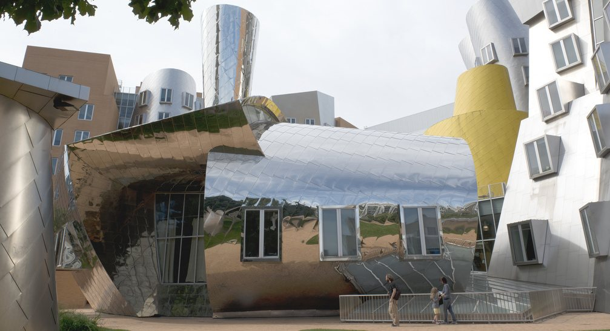
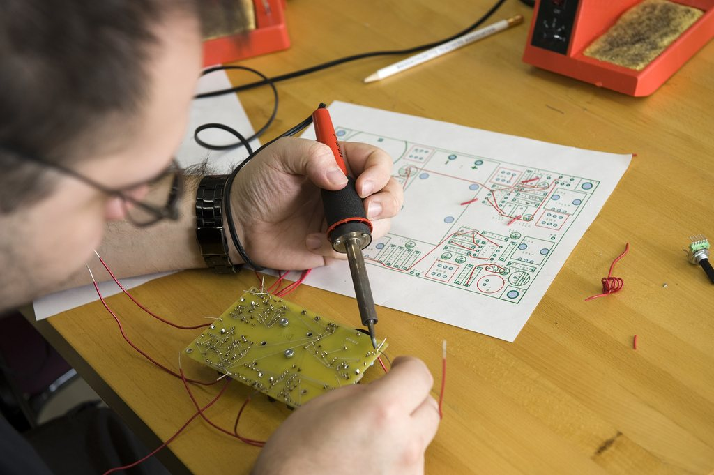

AI Student Performance Prediction
Predictive modelling system for identifying academic-risk patterns and recommending practical learning support.
PythonReportDatasetBuild a research-first portfolio website for an MIT EECS/CSAIL-style application narrative that looks mature, original, and technically serious rather than like a generic template. The site should lead with a clear research statement, advisor-fit section, experiment cards, publication roadmap, downloadable evidence pack, and timeline of technical growth. Each project should show a research question, method, evaluation, limitation, reproducibility asset, and societal relevance, linking the academic CV, GitHub, demo, technical report, and preprint or manuscript plan without using MIT marks unless official brand permission or policy allows it.
Logo asset inserted from user-provided upload for portfolio preview. Confirm official permission before public use.
Predictive modelling system for identifying academic-risk patterns and recommending practical learning support.
PythonReportDatasetData-analysis dashboard for rental trends, affordability pressure, inflation impact, and student financial planning.
EDAReportDatasetNLP prototype for classifying student feedback, extracting key topics, and turning comments into service-improvement insights.
NLPReportDatasetImage classification experiment showing dataset documentation, training pipeline, evaluation, limitations, and deployment potential.
computer visionReportDatasetPortfolio hub connecting academic CV, certificate summary, project reports, GitHub repository links, demos, and study statement.
ReactReportDatasetCampus images are stored in assets/campus-images with source credits in assets/source-credits. Use these as contextual visual material, not as an official university endorsement.

